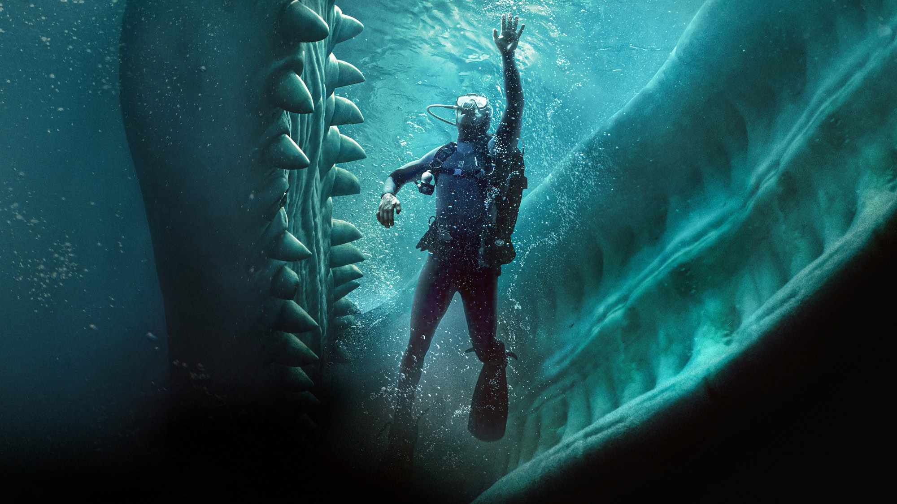
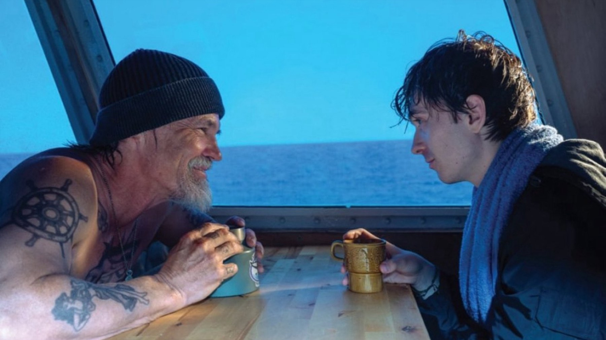
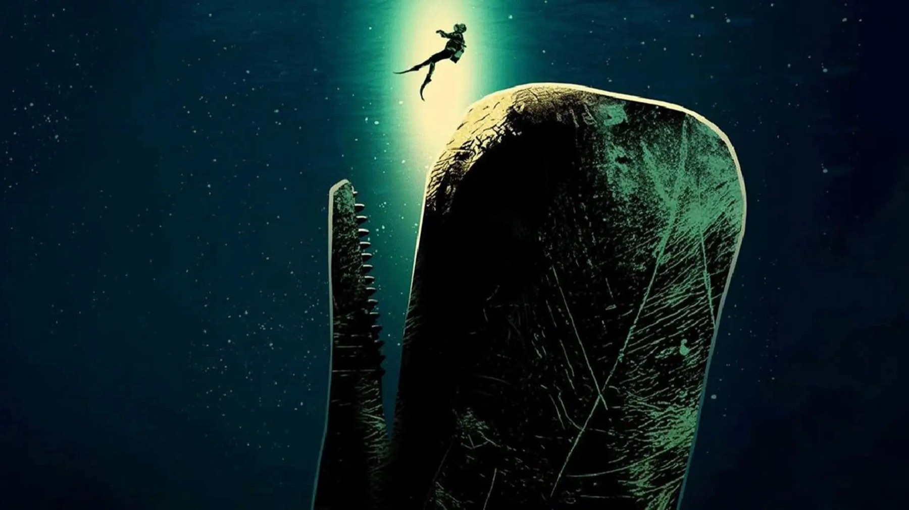

Whalefall - Nella balena
Un ragazzo inghiottito da un capodoglio con un'ora di ossigeno: il survival di Brian Duffield convince quando resta nel buio, però perde fiato quando torna indietro nel tempo
Un ragazzo con le bombole sulle spalle scende verso il fondo del Pacifico e, a un certo punto, si ritrova nel buio di uno stomaco di capodoglio. Detta così, la premessa di Whalefall sembra uno scherzo da videoteca. Eppure i critici che l'hanno visto la prendono molto sul serio: a ottobre 2026 Rotten Tomatoes segna il 73% di giudizi positivi, quindi il gioco, in buona parte, riesce. Il film è nelle sale italiane dal 15 ottobre.
Di cosa parla Whalefall?
Jay Gardiner (Austin Abrams) è uno studente che si immerge al largo della costa californiana perché cerca i resti del padre, scomparso da poco. Durante la discesa un capodoglio lo inghiotte, e allora comincia il conto alla rovescia: circa un'ora di ossigeno per trovare una via d'uscita. Il padre ha il volto di Josh Brolin; nel cast ci sono anche Elisabeth Shue, John Ortiz, Jane Levy ed Emily Rudd.
Brian Duffield firma la regia e la sceneggiatura, scritta con Daniel Kraus, l'autore del romanzo da cui il film è tratto. Dura 106 minuti ed è prodotto da Imagine Entertainment con 20th Century Studios, su un budget di 60 milioni di dollari. Le riprese sono cominciate a Los Angeles il 9 giugno 2025 e sono durate 62 giorni, ma il 17 giugno la troupe si è spostata per una parentesi a Monterey.

Cosa ne dice la critica
A ottobre 2026 Rotten Tomatoes assegna a Whalefall il 73% su 186 recensioni, mentre il pubblico è più generoso: il Popcornmeter è all'81%. Su Metacritic, invece, la media scende a 59 su 100 su 37 recensioni, e il CinemaScore è B. La sintesi di Rotten Tomatoes mette insieme i due umori: quando non si impantana nei flashback il film è viscerale, e la sua idea bizzarra chiede una certa sospensione dell'incredulità, però la ripaga con alcune delle sequenze più insolite che il genere abbia offerto.
Peter Travers, su The Travers Take, gli dà 2,5 su 4. Si diverte quando il film resta nel ventre del cetaceo, che gli mette addosso paura e ribrezzo insieme; però sostiene che la parte da soap opera affoghi tutto in una lacrima di troppo. Katie Walsh, per Tribune News Service, assegna invece 3 su 4, perché a chi accetta la discesa nell'ignoto il film restituisce una favola con molto più cuore di quanto ci si aspetti. Alison Willmore, su Vulture, ne apprezza la coerenza perché Whalefall va fino in fondo e trasforma in racconto, senza pudori, l'idea di un figlio avvolto dalla mascolinità tossica del padre.

Il nodo dei flashback
Mettendo in fila le voci, il film si divide su un punto solo: quanto spazio dare al passato. La sintesi di Rotten Tomatoes e Travers indicano il rischio negli stessi momenti, quelli in cui la storia lascia lo stomaco del capodoglio per tornare ai ricordi familiari. Willmore e Walsh, invece, vedono in quella linea il cuore del progetto. Per noi è la tensione più interessante, perché un survival che vuole essere anche un film sul lutto rischia di rallentare proprio dove il pubblico è più teso.
La lettura italiana e l'interprete
In Italia abbiamo trovato la recensione di Agnese Albertini su Cinefilos, che dà 3 su 5. Per lei il film va oltre i confini del survival. Definisce magnetica la prova di Austin Abrams, che regge da solo un'ora di claustrofobia, e legge l'animale meno come mostro che come simbolo di un ecosistema con cui convivere. Quanto ai flashback, in quella pagina Brolin è la presenza che dà corpo a un padre e a un figlio che in vita si sono parlati troppo poco. Anche Jeffrey Harris, su 411mania, vota 7,5 su 10 e indica in Abrams il perno, perché la trama poggia tutta sulla sua fatica di uscire.
C'è poi un dato che aiuta a leggere le recensioni: il film adatta un romanzo. Quando un libro nasce già come un'idea da incubo, chi lo porta in sala deve tenere insieme due promesse, la paura fisica dello spazio chiuso e il racconto interiore che il lettore ha sulla pagina. Le critiche citate sembrano dire che Duffield ci riesce per buona parte della durata, ma che sbilancia il peso nei passaggi di raccordo. Allora la nostra aspettativa, dopo tutte queste voci, è quella di un film che si ricorda per le scene nel buio più che per la storia di famiglia.
Il botteghino
A fine ottobre 2026 l'incasso mondiale era di circa 32 milioni di dollari (15 negli Stati Uniti, 17 all'estero), però il budget era di 60. Anche l'esordio americano, intorno agli 8 milioni, è rimasto sotto le previsioni di 10-12: per ora, quindi, la sala non lo sta premiando quanto la critica.
Vale la pena vederlo al cinema?
Se vi attira un thriller claustrofobico con una storia di famiglia al centro, la critica che abbiamo letto vi dà buone ragioni per andare. Se invece cercate soltanto tensione e creature, mettete in conto i flashback, perché sono la parte che divide. Il nostro giudizio si appoggia molto sulla critica citata, però di recensioni italiane ne abbiamo trovata una sola. Chi preferisce aspettare lo vedrà su Disney+ dopo la sala, ma per ora non c'è una data.
Un'idea da videoteca trattata con serietà: la maggior parte dei critici citati la promuove, e il 73% su Rotten Tomatoes lo conferma. La prova di Austin Abrams e le sequenze nel ventre del capodoglio sono il motivo per andare; però i flashback familiari, per Travers come per la sintesi di Rotten Tomatoes, sono il punto in cui il film perde ritmo. Lo consigliamo quindi a chi vuole un survival con un cuore, anche a costo di qualche minuto di pausa.
Domande frequenti
Quando esce Whalefall in Italia?
Nelle sale italiane dal 15 ottobre 2026, con Walt Disney Pictures
Whalefall è tratto da un libro?
Sì, dall'omonimo romanzo di Daniel Kraus, che ha firmato la sceneggiatura insieme al regista Brian Duffield.
Quanto dura Whalefall?
106 minuti.
Dove si vedrà in streaming?
Cinefilos scrive che dopo la sala arriverà su Disney+, senza indicare una data.